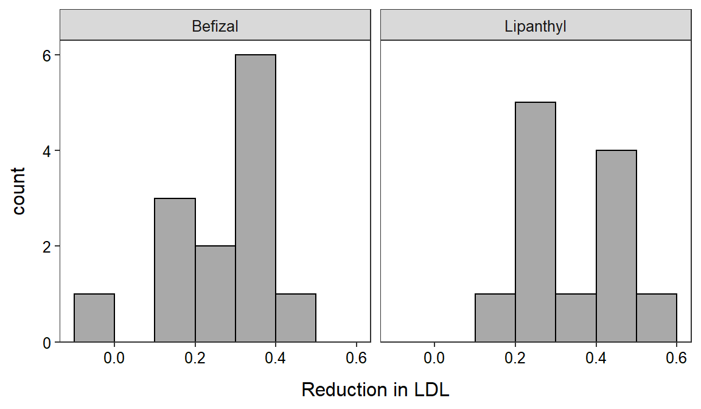

The full 11-steps for this example are in these annotations for the 2-sample t-test class example. However, the calculations required for Steps 5, 6, 7, 8, and 11 may be computed in R if the raw data are available as they were here. Note, however, that the data only had the before and after the drug LDL levels for each patient and not the reduction in LDL. Thus, a reduction in LDL variable had to be computed at shown below. This will not be required for most situations.
> dfobj <- read.csv("https://raw.githubusercontent.com/droglenc/NCData/master/Cholesterol2.csv")
> dfobj$redux <- dfobj$before-dfobj$after
> str(dfobj)'data.frame': 25 obs. of 4 variables:
$ before: num 2.98 2.7 2.6 2.94 2.55 2.92 2.94 2.94 2.5 3.41 ...
$ after : num 2.63 2.43 2.34 2.41 2.28 2.44 2.45 2.44 2.26 2.96 ...
$ tx : chr "Lipanthyl" "Lipanthyl" "Lipanthyl" "Lipanthyl" ...
$ redux : num 0.35 0.27 0.26 0.53 0.27 ...Another important note is that the data must be “stacked” in order to perform the analyses in R. This means that the data for one group must be stacked below the data for the other group, which will require a variable to explain which group the values correspond to. Fortunately this conforms to our mantra that each row must contain data from only one individual. The first three and last three rows for these data illustrate the stacked format.
> headtail(dfobj) before after tx redux
1 2.98 2.63 Lipanthyl 0.35
2 2.70 2.43 Lipanthyl 0.27
3 2.60 2.34 Lipanthyl 0.26
23 2.62 2.43 Befizal 0.19
24 2.99 2.64 Befizal 0.35
25 2.63 2.45 Befizal 0.18The Levene’s test result is computed with levenesTest() using a formula of the form qvar~cvar, where qvar is the quantitative response variable and cvar is the categorical variable that describes the groups. Of course, the data= argument is also needed. The p-value is shown under the Pr(>F) heading.
> levenesTest(redux~tx,data=dfobj)Levene's Test for Homogeneity of Variance (center = median)
Df F value Pr(>F)
group 1 0.0463 0.8315
23 The histogram of the response variable for each group may be needed for Step 4 (as above) and is easily computed as below (which you have done before). 
Finally, most of the calculations for Steps 6, 7, 8, and 11 are computed with t.test() using the same formula and data= argument as for levenesTest(). If the variances are found to be equal then you MUST also include var.equal=TRUE. Finally, you should include the null hypothesized value in mu= (will always be zero for 2-sample t-test), the alternative hypothesis sign in alt=, and the confidence level in conf.level= as you have done with the 1-sample t-test.
> t.test(redux~tx,data=dfobj,mu=0,alt="two.sided",conf.level=0.95,var.equal=TRUE) Two Sample t-test with redux by tx
t = -1.4885, df = 23, p-value = 0.1502
alternative hypothesis: true difference in means is not equal to 0
95 percent confidence interval:
-0.18673806 0.03045601
sample estimates:
mean in group Befizal mean in group Lipanthyl
0.2776923 0.3558333 From this output one can see
t.test() like this you do not need to worry about computing the pooled sample variance or the standard error.distrib()).Note that you will complete all 11 steps when you have the raw data, but you should use t.test() as shown here to perform all of the hard calculations for you.